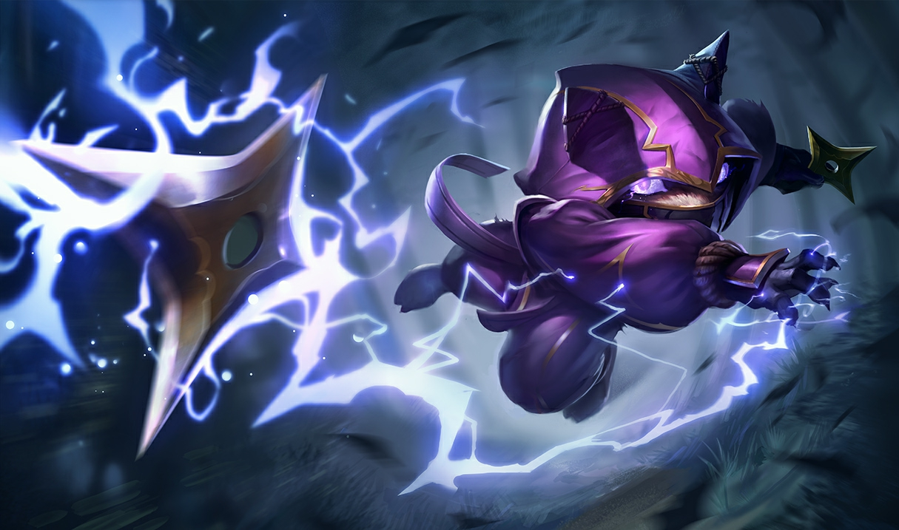

 Kennen urodził się w Bandle City. Fama głosi, że w pierwszych momentach życia najpierw wyskoczył z łona matki, a chwilę potem z rąk położnej, która odbierała poród. Jego rodzice byli przekonani, że z wiekiem niespożyte pokłady energii ich syna się wyczerpią, jednak zamiast tego energia chłopca nie znajdowała ograniczeń i dorównywała jej jedynie irytująca prędkość przemieszczania. Mimo niezwykłych talentów pozostał niezauważony (a przynajmniej nie został złapany, bo był niezłym rozrabiaką), do czasu aż pewnego razu wbiegł prosto na wielki, zewnętrzny mur Placidium. Wieści o jego wyczynie prędko dosięgły uszu Kinkou, a Kennen został szybko i w tajemnicy wezwany przed ich oblicze. Szybko przekonał się, że dobrze czuje się w roli Serca Nawałnicy, dlatego z zapałem głosi przesłanie Kinkou i wymierza kary w ich imieniu w całej krainie. Pracuje teraz nad utrzymaniem równowagi w Valoranie wraz ze swoimi towarzyszami − Akali i Shenem.
 Passive: Damaging an enemy champion signals Aery to dash to them, dealing 15 - 40 (based on level) (+ 10% AP) (+ 15% bonus AD) Attack damageAbility power Adaptive damage. Abilities targeted at allied champions signal Aery to dash to them, shielding them for 30 - 80 (based on level) (+ 25% AP) (+ 40% bonus AD).
Passive: Damaging an enemy champion signals Aery to dash to them, dealing 15 - 40 (based on level) (+ 10% AP) (+ 15% bonus AD) Attack damageAbility power Adaptive damage. Abilities targeted at allied champions signal Aery to dash to them, shielding them for 30 - 80 (based on level) (+ 25% AP) (+ 40% bonus AD).